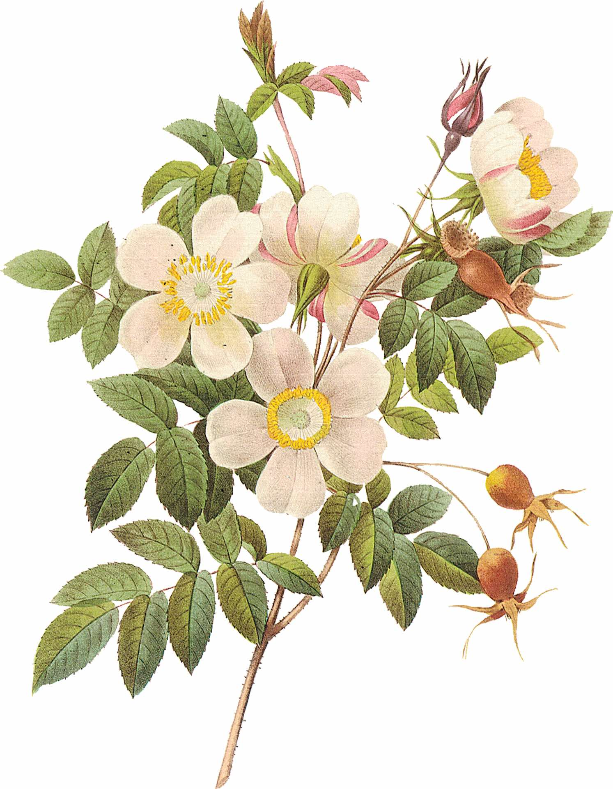

I’ve worked with several fashion and design businesses to craft copy for their website, social media, communications, and marketing materials. My experience lies mainly in apparel and interiors, but as a design devotee, I love working across all aspects of the field.
Current and former clients include Blackwood Timber Flooring, Wild Paisley, and Berkowitz Furniture.
On top of my copywriting work, I’ve written editorial for luxury watch retailer, The Hour Glass. Click through the below to read my work.
